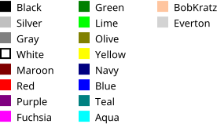

Colors may be specified by HTML notation.
This contains six hexadecimal digits, representing
RGB (red, green, blue) values between 0 and 255
for each color component, prefixed by the
# character.
<Line bgcolor="'#ffff00'" ... > <HorizontalLine color="'#ff00ff'" ... >
Colors may also be specified by hexadecimal notation.
This contains six hexadecimal digits, representing
RGB (red, green, blue) values between 0 and 255
for each color component, prefixed by
0x.
<Line bgcolor="'0xffff00'" ... > <HorizontalLine color="'0xff00ff'" ... >
Color names may also be specified by name. The following color names are supported for RLIB compatibility. Color names are matched in a case-insensitive way.
